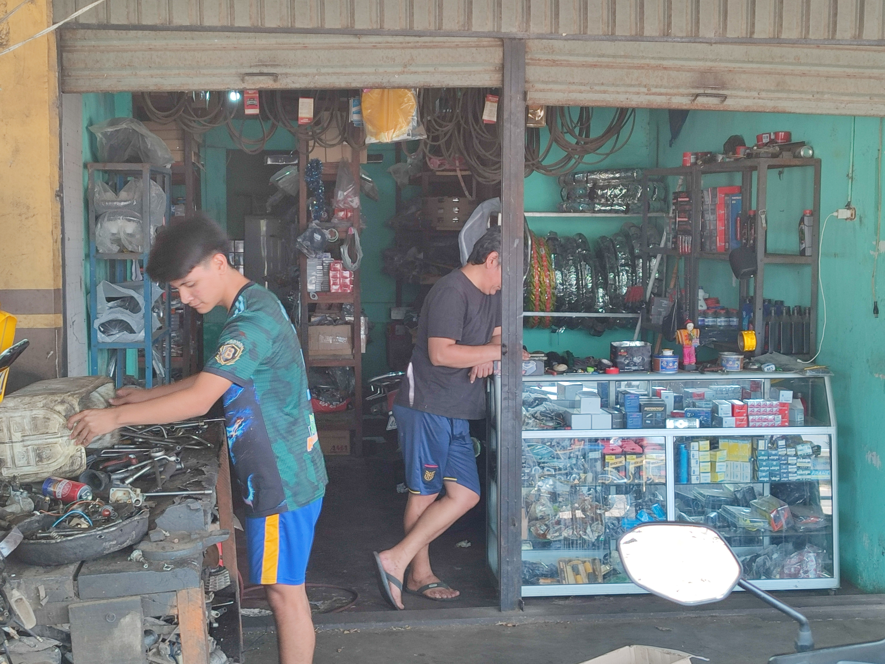
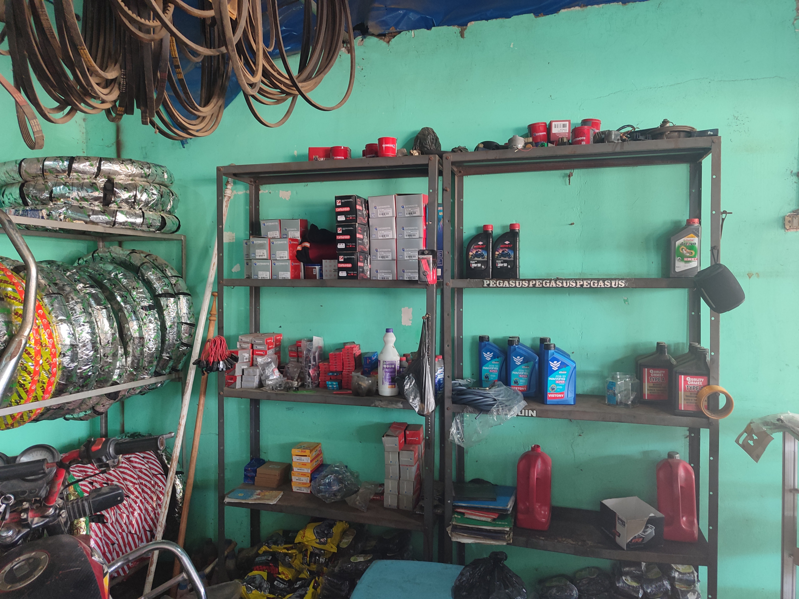
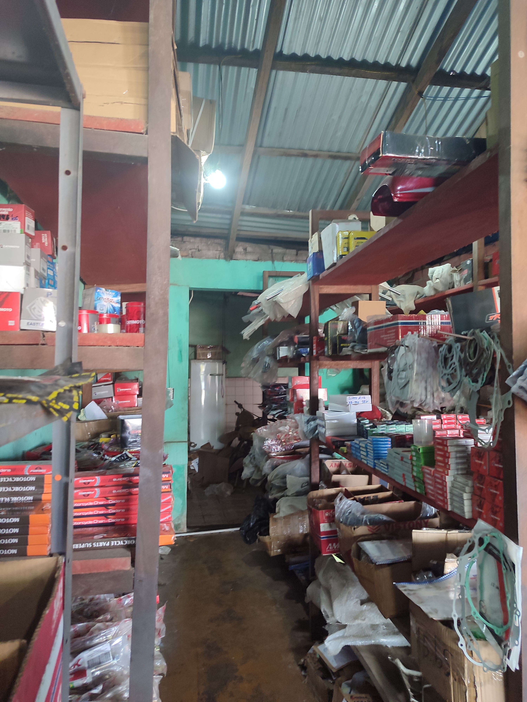
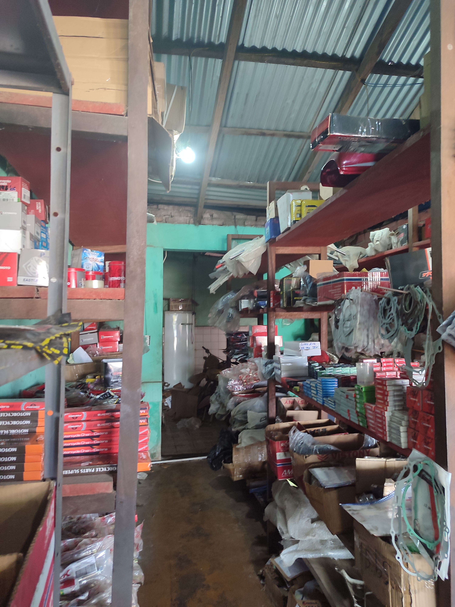

Servicios Básicos
En el Taller de Motos Luisiño, somos expertos en el cuidado y reparación de motos de todas las marcas y modelos. Contamos con un equipo profesional que se dedica a ofrecerte el mejor servicio, garantizando calidad, rapidez y confianza en cada trabajo que realizamos.
Nuestros Servicios Incluyen:
- Mantenimiento preventivo y correctivo
- Reparación de motores
- Cambio de aceite y filtros
- Revisión y ajuste de frenos
- Reparación de sistemas eléctricos
- Personalización y modificaciones
¿Por qué elegirnos?
- Más de 10 años de experiencia en el mercado
- Técnicos especializados y capacitados constantemente
- Uso de herramientas y equipos de alta calidad
- Atención rápida y personalizada
- Precios justos y transparentes
Visítanos o contáctanos hoy mismo para agendar una cita y mantener tu moto en óptimas condiciones. ¡En el Taller de Motos Luisiño, tu moto está en buenas manos!



 
